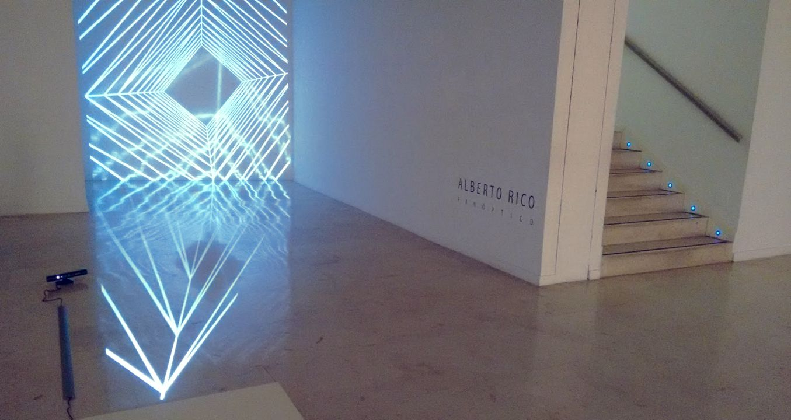

Panopticon
A multi-user interactive installation (2017)

Panopticon is a multi-user interactive installation that projects a threedimensional space on a wall, creating the illusion of a space behind the wall, adapting it's perspective to match each user's point of view.
The imposibly overlapping spaces only exist through our perception, and are affected by it. These subjective realities lay over our usual reality, making us question the objectivity of reality, and how our existance and percepction mold it.
From a technical point of view the piece makes use of a Microsoft Kinect sensor that inputs the users positions in space, allowing the projection to mantain the illusion of depth.
Panopticon was part of Dentro del Leviatán, a collective show in Málaga at Museo del Patrimonio Municipal.